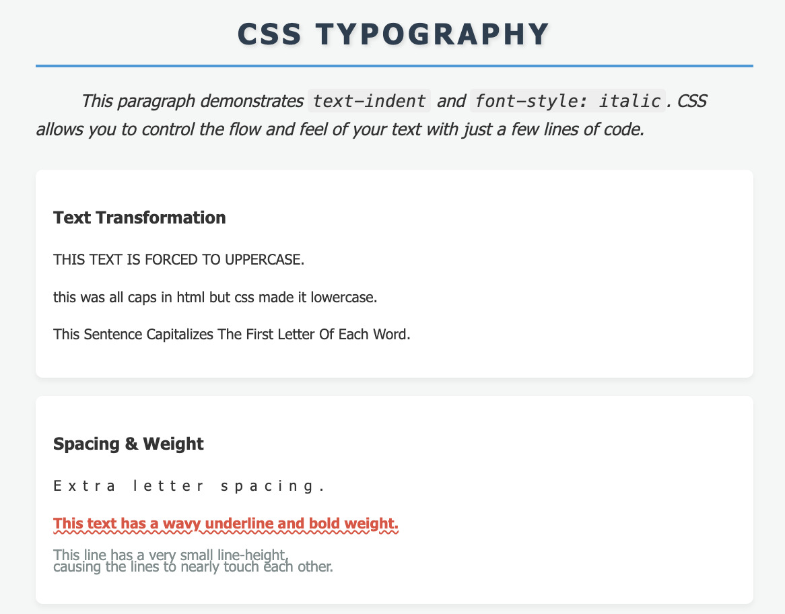
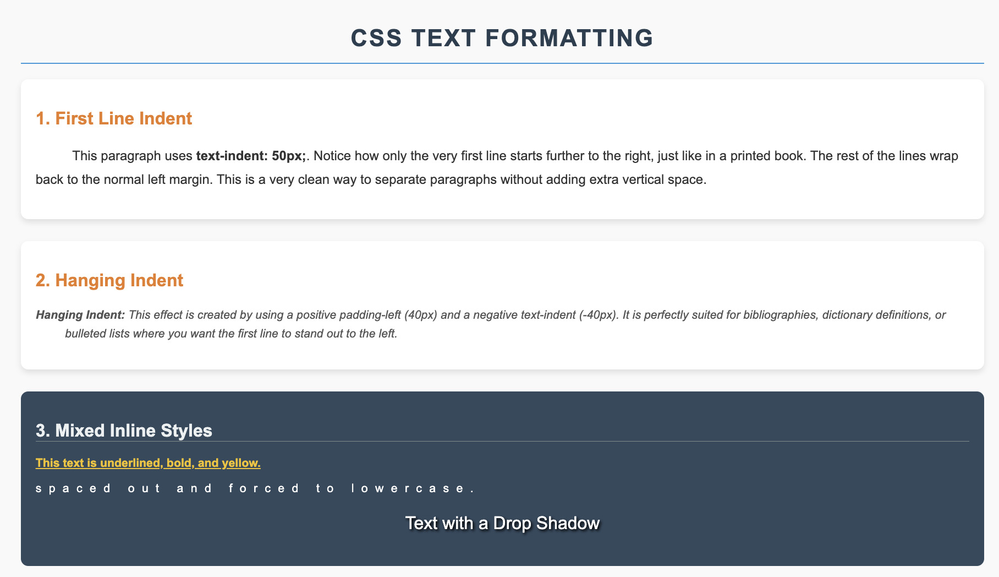
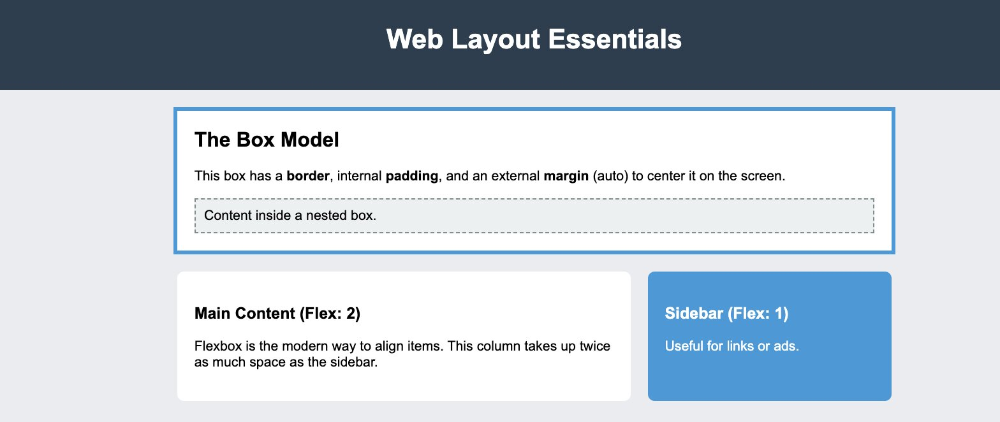
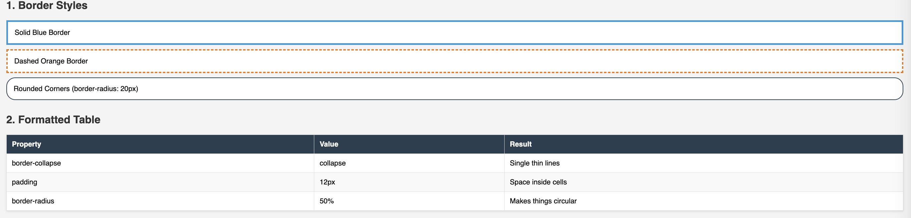
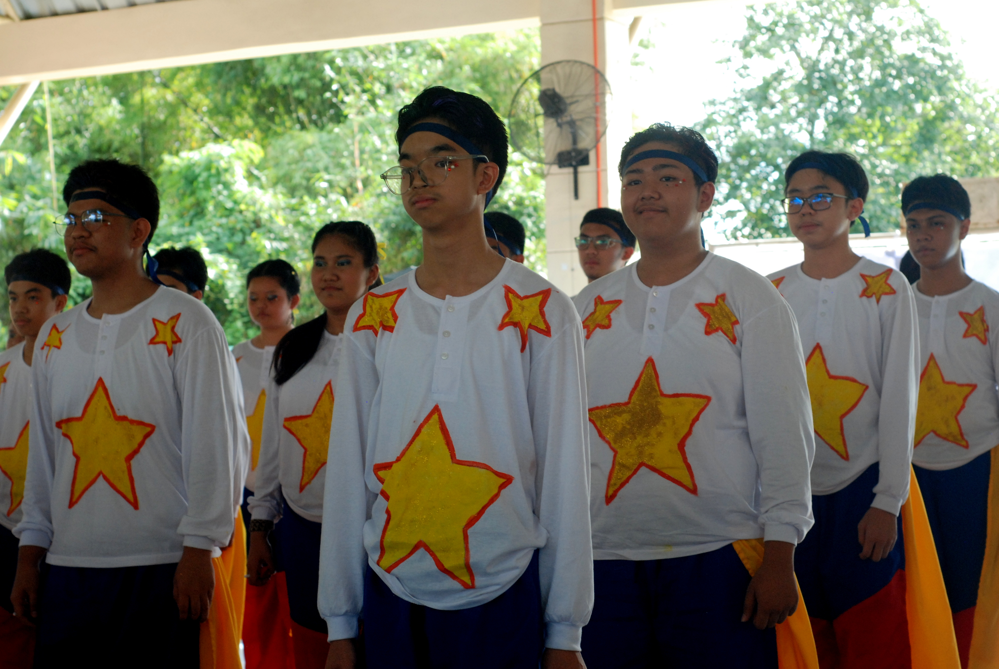

3RD QUARTER ICT
Lessons
- Formatting Text with CSS - Text Properties & Values
- Here I Learned about the different ways in learning css and how to format text and their text properties, but these cannot be done without learning the meaning of the word typography. Here i learned the different types of properties and values that CSS has to offer, starting from its style, to its position, and to its color. This lesson has helped me to learn the basics of CSS and its basic properties and how to edit them normally.
- I also learned about the different kinds of variants on how to make the case bigger or smaller depending on the use and what i need when i am coding and writing or creating a file needed or required by the teacher. I also learned how shortcuts work like word wrap and so much more.
- Formatting Text with CSS - Indent
- I learned about the text indent where it will help me indent my text to make it viewed by the audience to make it a bigger meaning and let them view it as the bigger picture, I also learned about the line spacing and text-transform letting me arrange text and their style depending on the project. I also learned how to properly change the background color to make it formal with the theme.
- Formatting Layout with CSS
- Here relies the general term Box Model where it helps you understand the layout of what you need in CSS. This will help you arrange your contents precisely and the formal area where you need to put your data and information without a hassle and overthinking where to put it. I learned also about Element positioning to help me place elements to a normal and suited place to avoid bad arrangements and for the reader to get the main idea or picture. I also learned about offset where it helps me set distance of the element from another elements when i place them. Here also relies the float where it helps me control the element and be in a specified block location on a page left, right or none. Wrapping text around an element is general and helps me with making CSS easier.
- I also learned about more on the background property and I did not know it had a lot to offer from the easiest to hardest, or wanting to repeat pictures or not. It made using CSS and how to edit content easier, I also learned how to put pictures and organize them in a specific area.
- I also learned about margins to make the area or the screen more organized when I put data and to not have a corrupted area or layout for readers to view and watch.
- Formatting Border & Table
- Here I learned how Border or creating them are really helpful not only for the organizement, but on how readers view your content. It will not just help readers see how organized the content is, but they will also see the big picture on the information that you are showing and you want to show.
- Formatting Border and Table helps me frame and create borders that were never seen before and it helps me organize data more easily and fastly for no hassle and disappointment.
- I also learned how padding helps me space elements from one another and more organized area to avoid unnecessary placements of pictures and elements that i plan to place.
- Table layout is a general meaning for layout like a table to help the readers view it as a table layout on the information that I will be placing.




Events
- VPOP
- Vpop shaped not only myself, but also my section. It helped me know more about myself and what life has to offer. This event shaped my leadership skills and how to communicate with other people. It helped me show my love for dancing and singing and helped me share the gift that life has to offer. It showed me that in life, it doesn't always have to be academics, but also you can have fun at the same time.
- MVP
- Mvp, this was a big jump and a big challenge, this event has mostly shaped my chemistry with my partner and it has told me that I can also voice out, not only for my opinions, but also for the truth, MVP isnt just about winning, its about creating bonds that were never made and help one another be helpful with themselves, it helped me with my confidence and speaking out.
- “I may not have won, but the memories made will always be remembered.”
- Math Idol
- Here in math idol, was a different challenge, from helping my team create their song, to helping them in real performance. To help them calm down and cheer them when they are on the real stage. The time and effort placed given was a help to them and a big chance for them to win. I may not have joined, but I have shaped them to their absolute limits and their talents and skills.
